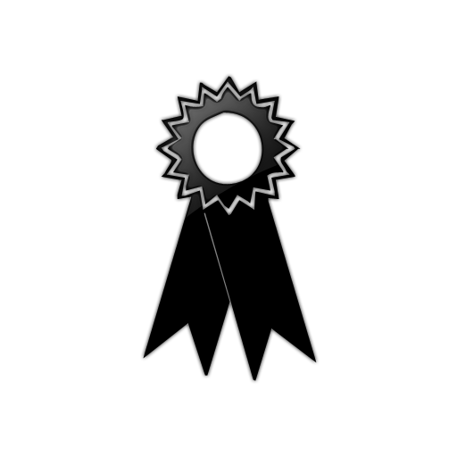

Publications by year
- The Web’s Sixth Sense: A Study of Scripts Accessing Smartphone Sensors. Anupam Das, Gunes Acar, Nikita Borisov and Amogh Pradeep. ACM Conference on Computer and Communications Security (CCS), 2018.
- Every Move You Make: Exploring Practical Issues in Smartphone Motion Sensor Fingerprinting and Countermeasures. Anupam Das, Nikita Borisov and Edward Chou. Privacy Enhancing Technologies Symposium (PETS), 2018.
- Riding out DOMsday: Toward Detecting and Preventing DOM Cross-Site Scripting. William Melicher, Anupam Das, Mahmood Sharif, Lujo Bauer and Limin Jia. Network and Distributed System Security Symposium (NDSS), 2018.
- Mining on Someone Else’s Dime: Mitigating Covert Mining Operations in Clouds and Enterprises. Rashid Tahir, Muhammad Huzaifa, Anupam Das, Mohammad Ahmad, Carl Gunter, Fareed Zafar, Matthew Caesar and Nikita Borisov. International Symposium on Research in Attacks, Intrusions and Defenses (RAID), 2017.
- A Scalable and Privacy-Aware IoT Service for Live Video Analytics. Junjue Wang, Brandon Amos, Anupam Das, Padmanabhan Pillai, Norman Sadeh and Mahadev Satyanarayanan. ACM Multimedia Systems Conference (MMSys), 2017. 
- Some Recipes Can Do More Than Spoil Your Appetite: Analyzing the Security and Privacy Risks of IFTTT Recipes. Milijana Surbatovich, Jassim Aljuraidan, Lujo Bauer, Anupam Das and Limin Jia. International World Wide Web Conference (WWW), 2017.
- Password Correlation: Quantification, Evaluation and Application. Shouling Ji, Shukun Yang, Anupam Das, Xin Hu and Raheem Beyah. IEEE International Conference on Computer Communications (INFOCOM), 2017.
- Assisting Users in a World Full of Cameras: A Privacy-aware Infrastructure for Computer Vision Applications. Anupam Das, Martin Degeling, Xiaoyou Wang, Junjue Wang, Norman Sadeh and Mahadev Satyanarayanan. Workshop on the Bright and Dark Sides of Computer Vision: Challenges and Opportunities for Privacy and Security (CV-COPS, co-located with IEEE CVPR), 2017.
- Towards Privacy-Aware Smart Buildings: Capturing, Communicating, and Enforcing Privacy Policies and Preferences. Primal Pappachan,, Martin Degeling, Roberto Yus, Anupam Das, Sruti Bhagavatula, William Melicher, Pardis Emami Naeini, Shikun Zhang, Lujo Bauer, Alfred Kobsa, Sharad Mehrotra, Norman Sadeh and Nalini Venkatasubramanian. International Workshop on the Internet of Things Computing and Applications (IoTCA, co-located with ICDCS), 2017.
- Tracking Mobile Web Users Through Motion Sensors: Attacks and Defenses. Anupam Das, Nikita Borisov and Matthew Caesar. Network and Distributed System Security Symposium (NDSS), 2016.
- Smartphone Fingerprinting Via Motion Sensors: Analyzing Feasibility at Large-Scale and Studying Real Usage Patterns. Anupam Das, Nikita Borisov, Edward Chou and Muhammad Haris Mughees. arXiv.org, 2016.
- Defending Tor from Network Adversaries: A Case Study of Network Path Prediction. Joshua Juen, Aaron Johnson, Anupam Das, Nikita Borisov and Matthew Caesar. Privacy Enhancing Technologies Symposium (PETS), 2015.
- Exploring Ways To Mitigate Sensor-Based Smartphone Fingerprinting. Anupam Das, Nikita Borisov and Matthew Caesar. arXiv.org, 2015.
- Do You Hear What I Hear? Fingerprinting Smart Devices Through Embedded Acoustic Components. Anupam Das, Nikita Borisov and Matthew Caesar. ACM Conference on Computer and Communications Security (CCS), 2014.
- : Relay Reliability Reputation for Anonymity Systems. Anupam Das, Nikita Borisov, Prateek Mittal and Matthew Caesar. ACM Symposium on Information, Computer and Communications Security (ASIACCS), 2014.
- The Tangled Web of Password Reuse. Anupam Das, Joseph Bonneau, Matthew Caesar, Nikita Borisov and XiaoFeng Wang. Network and Distributed System Security Symposium (NDSS), 2014.
- Analyzing an Adaptive Reputation Metric for Anonymity Systems. Anupam Das, Nikita Borisov and Matthew Caesar. Symposium and Bootcamp on the Science of Security (HotSoS), 2014.
- Fingerprinting Smart Devices Through Embedded Acoustic Components. Anupam Das, Nikita Borisov and Matthew Caesar. arXiv.org, 2014.
- Securing Anonymous Communication Channels under the Selective-DoS Attack. Anupam Das and Nikita Borisov. International Conference on Financial Security and Data Security (FC) 2013.
- SecuredTrust: A Dynamic Trust Computation Model for Secured Communication in Multi-Agent Systems. Anupam Das and Mohammad Mahfuzul Islam. IEEE Transaction on Dependable and Secured Computing (TDSC), 2012.
- Dynamic Trust Model for Reliable Transactions in Multi-agent Systems. Anupam Das and Mohammad Mahfuzul Islam. International Conference on Advanced Communication Technology (ICACT), 2011.
- Securing Tor Tunnels under the Selective-DoS Attack. Anupam Das and Nikita Borisov. arXiv.org, 2011.
- A Novel Feedback Based Fast Adaptive Trust Model for P2P Networks. Anupam Das and Mohammad Mahfuzul Islam. IEEE Local Computer Networks (LCN), 2010.
- Evolving Multilayer Neural Networks using Permutation Free Encoding Technique. Anupam Das and Saeed Muhammad Abdullah. International Conference on Artificial Intelligence (ICAI), 2009.
- Permutation Free Encoding Technique for Evolving Neural Networks. Anupam Das, Md. Shohrab Hossain, Saeed Muhammad Abdullah and Rashed Ul Islam. International symposium on Neural Networks: Advances in Neural Networks (ISNN), 2008.